Architecture
The stack is kube-prometheus-stack (Prometheus, Alertmanager, Grafana, kube-state-metrics, node-exporter, blackbox-exporter) as one Helm chart, plus Grafana Alloy shipping logs to Loki.
Alloy scrapes every pod; Loki stores and Grafana queries. Blackbox probes every published hostname from outside the cluster. Trivy Operator reports findings as CRs so they query, alert, and aggregate like everything else.
Node dashboard
The question was "why does this node look unstable". Load average and iowait answered nothing.
Pressure stall metrics (PSI)
CPU, memory, I/O pressure over 10s/60s/300s windows. The signal that actually correlates with "feels slow".
Per-disk latency with throughput
Not just IOPS. A disk at 10ms latency doing 100MB/s is fine; 10ms at 1MB/s is a problem.
Memory
Available, not free. Includes reclaimable cache.
Reboot annotations
Kured window shows as shaded bands, not red spikes.
The answer to "why unstable" turned out to be one reboot, not a sick node.
What else is worth watching
- Flux reconciliation —
gotk_resource_infoready="False"over 5m, not per-scrape. - Failed pods (excluding Job history) —
phase=Failedminus Job-owned. - Blackbox probes —
probe_success == 0from outside the cluster. - Container restarts (1h) —
increase(kube_pod_container_status_restarts_total[1h]). - Longhorn volumes — robustness < 2 or usage > 85%.
- Certificates — expiring within 30d.
Dashboards as reviewed files
Every dashboard is a ConfigMap in home-cluster/monitoring/ with label grafana_dashboard: "1". The sidecar writes it to /tmp/dashboards/. Register the file in monitoring/kustomization.yaml — resources are listed explicitly.
The generator script (templates/dashboard_generator.py) makes layout changes a two-line edit. Valid JSON by construction beats fixing braces in a 30KB blob.
Panel validation
A panel with a broken expression ships silently as "No data", which reads as a healthy zero.
- Execute every expression against live Prometheus before opening the PR.
- Keep a deterministic validator that asserts: JSON parses, IDs unique,
x + w <= 24, no grid overlap, datasource UID set, and zero expressions outside the verified set. - Build the directory:
kubectl kustomize home-cluster/monitoring. This is the part of the gate that covers your change. - After merge, confirm it is actually served: fetch the dashboard API and the
/d/{uid}page without credentials and check the title and panel count.
What isn't measured
- User experience — no RUM, no synthetic transactions.
- Application-level SLIs — only infrastructure metrics.
- Cost — no automated cloud cost attribution (it's a home cluster).

